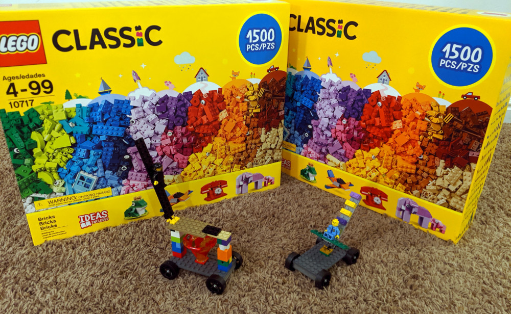
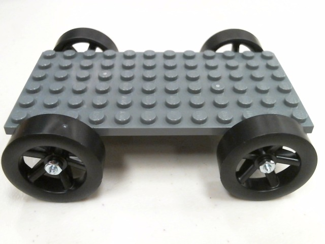

The LEGO Derby is a great option for groups that don't have the time or resources to build traditional pinewood derby cars. We provide the LEGOs and car platforms, and participants build the cars at the derby. The LEGO Derby is perfect for schools, family reunions, birthday parties, corporate events, public events, or any other setting where it is impractical to provide a pinewood derby kit for each participant.
Even if participants are racing standard pinewood derby cars, we'll still bring the LEGOs and you can use them however you like. Building the LEGO cars makes a fantastic gathering activity, and it's fun for all ages. If there's any time remaining at the end of your event, we'll open up the track for LEGO car racing. No one will leave your derby upset when LEGOs are involved.

Participants build their cars on these pre-weighted platforms. Multiple platforms can be combined for even more creative designs.
With the LEGO Derby, you have the option of choosing between a traditional racing format, or an open racing format. In the open format, participants build, race, and modify their cars throughout the entire event. This inspires creative problem solving as participants tweak the designs of their cars and experiment with different ideas. Unlike the traditional format, cars are not weighed or checked in to an open format race, and there are no lane assignments. Participants can split their time between building and racing however they want.
Open format races can also be combined with a traditional format race: participants can build and test their cars for part of the time, then check them in and race in a traditional-style derby to decide the winner. LEGO Derby cars and standard pinewood derby cars can be combined in the same event.
The open racing format is perfect for public events where people come and go. We've used the open format successfully at the Thanksgiving Point Maker Faire, where hundreds of people built and raced LEGO cars. No one, adult or child, could resist stopping at our booth to build and race a car. I was amazed at some of the concepts and designs that people came up with.